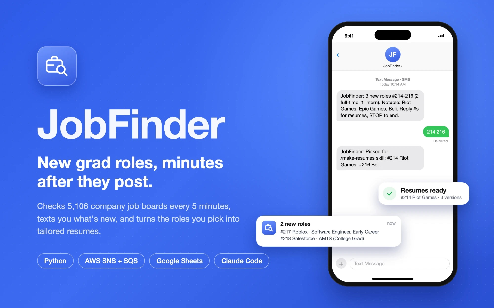
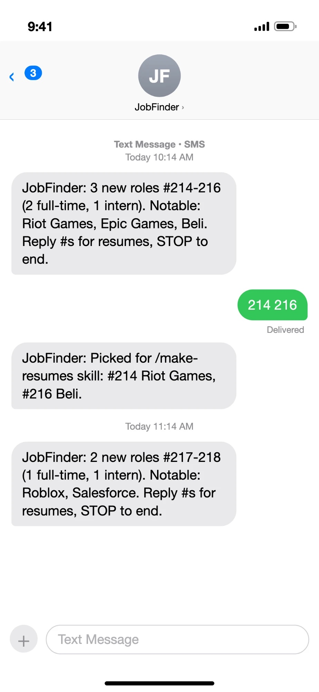
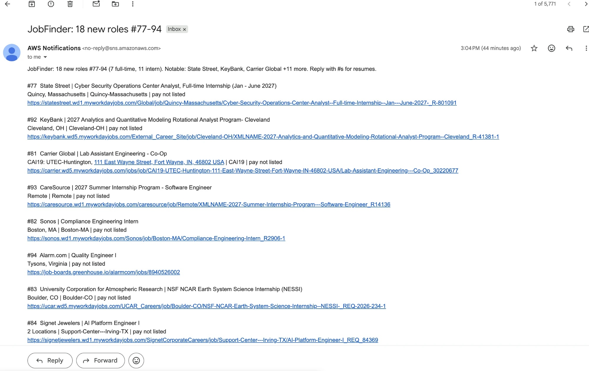
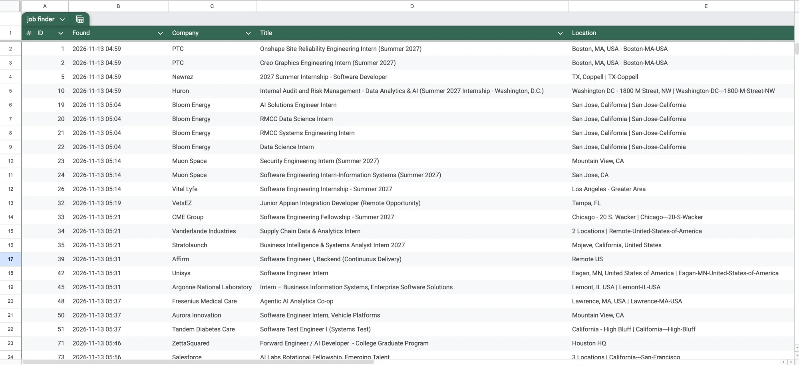

Automation · AWS
JobFinder
A one-file Python service that spots new US entry-level and intern software roles within minutes of a company posting them, and texts me a summary.

![Architecture diagram: Simplify lists, YC companies and my own list build a daily watchlist of 5,106 boards; finder.py on a Lightsail server checks about 500 job boards every 5 minutes, filters for entry-level US software roles posted in the last 24 hours, stores role numbers in SQLite, and sends new roles to an SNS topic (email and text) and a Google Sheet; text replies come back through an SQS queue, and picks go to a resume workflow on my Mac that drafts three resumes and a benchmark, then ranks them with a blind recruiter](img/job-finder/2.jpg)



Overview
For entry-level roles, applying early matters. Most students watch the public new-grad and internship lists, but when I compared 29 new listings against each job’s publish time on the company’s own board, the lists trailed by a median of 6.3 hours, and some by 15 days.
JobFinder skips the middleman. It reads companies’ own job boards directly, decides which postings are genuinely new, entry-level, technical and in the US, and texts and emails me a summary at most once an hour. I text back the numbers of the roles I want.
What I built
- A watchlist of ~5,100 job boards. Rebuilt daily from three sources: the boards named in Simplify’s listing history (about 4,200 companies that have hired new grads), Y Combinator companies whose board names it guesses on Ashby, Greenhouse, Lever and Breezy (about 840 more), and my own list. It covers 17 kinds of job-board services, including Greenhouse, Lever, Ashby, Workday and the custom careers sites of EA, Microsoft, Netflix and Valve.
- Polling that stays polite. Checking every board every 5 minutes would be about 1.5 million requests a day, so the 300 most important boards are checked every 5 minutes and the rest every 2 hours in rotating slices. One check reads about 500 boards with 16 threads in roughly a minute.
- Seven rules for “new”. A role is reported only if it’s never been seen, the board itself dates it within the last 24 hours, the title is entry-level and technical, the location is in the US (so “Bengaluru, IN” isn’t mistaken for Indiana), the description names real software tools, and the company hasn’t posted the same title in the last 90 days.
- Texts in, texts out, no open ports. One SNS publish sends both the text and the email. Replies to a toll-free number go through SNS into an SQS queue that the service long-polls, so nothing on the internet can reach the server directly. It accepts replies only from my number, and each AWS credential can do one job and nothing else.
- Built to survive thousands of strangers’ servers. An error on one board is logged and skipped, never stopping the check. A built-in self-test covers the main cases, and a code review plus two adversarial test runs found 13 problems, all fixed.
- From pick to resume. Roles I pick feed a resume workflow: an agent drafts three tailored one-page resumes using only confirmed facts, writes a benchmark resume for a fictional candidate, fact-checks every claim, and has a blind “recruiter” score all four.
Outcome
- ~5,100job boards watched
- 5 minbetween checks of the top 300
- $7a month to run
JobFinder runs as a single Python file, written against the standard library, as a systemd service on a $7-a-month Lightsail server. It uses almost no CPU, since nearly all of each check is waiting for job boards to answer.
results: roles found, how much earlier than the public lists, applications or interviews it led to, or what you learned